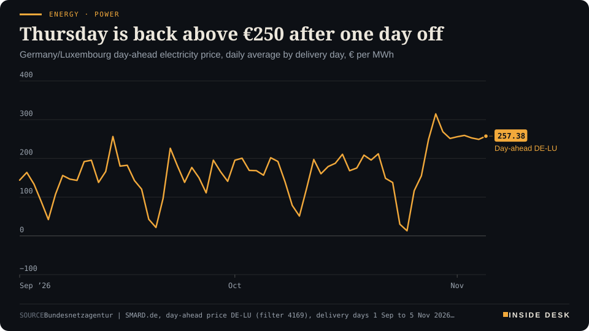
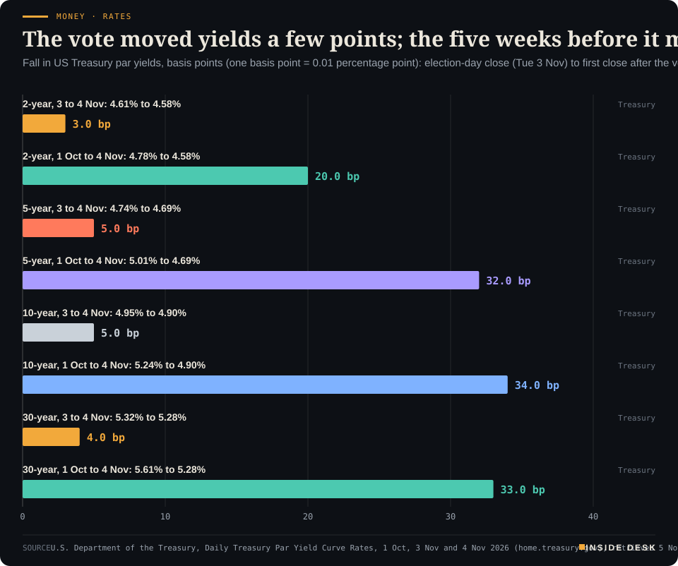

Inside Desk ePaper, Morning ePaper · Thu 5 Nov 2026
Thursday, 5 November 2026Always free
Inside Desk
Morning ePaperAvailable 06:30 CET · Berlin
Lead · Security & Order
A Starlink ground station in Poland burned in September; this week German special police arrested the man suspected of organising it, on paperwork that crossed two borders. Elsewhere, the 10-year Treasury yield ended the first session after the vote at 4.90%, and German day-ahead power runs from €196.97 a megawatt-hour at midnight to €349.36 for the hour from 17:00.
A fire in Poland was answered by a warrant, a police raid and a judge in Stuttgart, which is how Europe usually wins: slowly, on paper, and for good.
Geo-economics · p. 5
Markets & Macro · p. 6
Energy & Industry · p. 11
Climate & Weather · p. 18
The day in one sentenceA fire in Poland was answered by a warrant, a police raid and a judge in Stuttgart, which is how Europe usually wins: slowly, on paper, and for good.
ContentsInside Desk · Morning ePaper5 November 2026
A Starlink ground station in Poland burned in September; this week German special police arrested the man suspected of organising it, on paperwork that crossed two borders. Elsewhere, the 10-year Treasury yield ended the first session after the vote at 4.90%, and German day-ahead power runs from €196.97 a megawatt-hour at midnight to €349.36 for the hour from 17:00.
11 edition pieces · 11 desks · Available 06:30 CET, 5 November 2026
22 ePaper extras, added , 5 November. They appear only in the ePaper and carry their own time.
17:30 Evening ePaper, updated live until 22:30 with an “Updated” time and a Latest page
Sun 10:00 The Sunday Magazine
Berlin time. Every issue is free.
How to read it
Swipe, use the arrow keys or the page strip. Tap any headline for the reading view. Press / to search, t for contents, +/− to zoom. Download the PDF.
LeadInside Desk · Morning ePaper5 November 2026
Security & Order · Lead · 3 min
A Starlink gateway in Poland burned in September. On Tuesday German special police arrested the suspected organiser near Stuttgart. Hybrid war is loud; the answer to it is paperwork that crosses borders.
On the night of 22 to 23 September, two men were driven from Germany to Wola Krobowska, a village in Poland’s Mazowieckie province, and a fire broke out at a Starlink ground station there1. The site is a gateway: it links the satellites passing over Central Europe to fibre-optic lines on the ground, and it carries internet traffic through Poland to countries including Ukraine1. For Ukraine’s drone units and front-line troops that link is not a convenience. Poland alone has supplied 29,500 of the terminals they use2.
On Tuesday, German special police arrested a Turkish citizen in the district of Reutlingen, south of Stuttgart1,3. The Stuttgart Prosecutor General’s Office and Baden-Württemberg’s State Criminal Police Office say he ordered the two men to carry out the attack while he was in Germany, and arranged for another suspect to drive them to Poland1,2. Officers seized eight mobile phones and ammunition1. A Stuttgart court ordered him held on strong suspicion of preparing a terrorist offence2. Prosecutors have opened their own domestic case rather than only acting on Poland’s requests, and they gave no further details, citing the ongoing investigation1,2.
That is the news. The argument is in how it happened.
The warrant came first. The two alleged arsonists, aged 38 and 34, were detained in Nürtingen on 12 October under European arrest warrants issued by Poland, and their extradition proceedings are still under way2. A Polish prosecutor had opened a sabotage and terrorism investigation two days after the fire1. Polish paperwork, German police, a German judge: that is the European arrest warrant doing what it was built for, quietly, six weeks after a blaze that made headlines for a day. Until now, arrests in Europe’s run of attacks on Starlink sites had reached only people suspected of doing the deed, Euromaidan Press notes; this is the first suspect held as the one who ordered an attack2.
LeadInside Desk · Morning ePaper5 November 2026
The pattern is cheap labour. Warsaw has blamed Russian intelligence for the fire, and Prime Minister Donald Tusk called it an act of hybrid warfare, NOS reports3. Tomasz Siemoniak, the minister who coordinates Poland’s special services, said those services increasingly turn to people tied to the criminal world2. Der Spiegel reported in October that the trail leads to the Daltons, a Turkish organised-crime group also active in Germany, whose members may have worked for Russian intelligence, as summarised by Euromaidan Press2. …
Geo-economicsInside Desk · Morning ePaper5 November 2026
Geo-economics · 2 min
Canada and China extended their tariff truce to the end of 2028. The most valuable thing exchanged in Beijing was not a quota but a date.
Canada and China have agreed a two-year extension, to the end of 2028, of the favourable market access Canadian canola meal, peas, lobsters and crab have had under their Preliminary Joint Arrangement, Global Affairs Canada said on Wednesday1. In return, Canada extends to the end of 2028 its remission measures for certain Chinese steel and aluminium products not made in Canada1. The deal was struck at the Joint Economic and Trade Commission in Beijing, co-led by trade minister Maninder Sidhu and China’s commerce minister Wang Wentao, the first time the commission has met at ministerial level1. Lianhe Zaobao notes the announcement came the day after the midterm elections in the United States2.
The arrangement dates from Prime Minister Mark Carney’s visit to Beijing in January, when China also restored access for Canadian beef1. Under it, Canada agreed in January to let up to 49,000 Chinese-made electric vehicles in at a low tariff rate, Zaobao reports2. Sidhu says the arrangement supports sectors that sustain “more than 600,000 jobs in Canada”1.
The numbers explain the patience. China was Canada’s second-largest single-country merchandise trading partner in 2025, with $125.7 billion of two-way trade: $35.0 billion of Canadian exports and $90.6 billion of imports, by the Canadian government’s count1. Desk arithmetic: imports were about 2.6 times exports, a gap of $55.6 billion. Exports grew 31.4% to $21.5 billion in the first half of this year1. Ottawa’s target is a 50% rise in exports to China by 20301.
The useful word in the release is “predictability”1. A farmer choosing what to plant next spring, or a lobster exporter signing freight for 2027, cannot price a tariff that may return in a few months. …
Geo-economics · Short item · ePaper extra, added
A US-led consortium is preparing to swap frozen Lukoil shares for the Russian company's foreign oilfields, refineries and petrol stations. Sanctions are being tested in the back office.
A consortium led by US billionaire Todd Boehly is preparing a securities swap to take over sanctioned Russian oil major Lukoil’s international assets, and a deal is expected within weeks, four people close to the process told Reuters1. The assets include oilfields, refineries and petrol stations in Europe, the Middle East and Africa1.
The mechanics are the interesting part. A bank acting for the consortium has bought billions of dollars of frozen Lukoil securities from around ten US and British investment funds and from depositary banks, at 30 US cents on the dollar, the people said1. The plan is a cashless exchange of those securities for the foreign assets1. …
Geo-economics · Brief · ePaper extra, added
The China International Import Expo opened its ninth edition in Shanghai on Thursday and runs until 10 November1. It has drawn 4,142 overseas exhibitors on more than 440,000 square metres, and over 480 products will make a global, Asian or Chinese debut, the most yet, Xinhua reports1. President Xi Jinping launched the fair in 2018 to show China’s commitment to opening its market; it has become a venue for foreign governments and companies to sign purchase agreements and memoranda, and organisers said tentative deals worth more than $80 billion were struck last year, Reuters reports2. Reuters’ headline sets this year’s opening against record trade imbalances2. “Tentative” is the word to keep. A memorandum is a handshake; an invoice paid is trade.
Markets & MacroInside Desk · Morning ePaper5 November 2026
Markets & Macro · Podium vs Print · 2 min
Qualcomm's chief executive says the phone business has turned the corner. His own quarter shows handset chip sales down by a quarter on a year earlier. Both can be true; only one is in the accounts.
Podium
“We're starting to see sequential growth now on Android.”
Cristiano Amon, president and chief executive of Qualcomm, in an interview with Reuters after the results, Wednesday 4 November 2026, after the New York close
Print−26%
Handset chip revenue in the quarter, down to $5.14 billion from a year earlier, below analysts' estimates.
Qualcomm's fiscal fourth-quarter results, as reported by CNBC and Reuters, Wednesday 4 November 2026
The podium. Qualcomm’s chief executive, Cristiano Amon, had a good line ready on Wednesday evening. Sales of Android handsets, he told Reuters, had bottomed out: “We’re starting to see sequential growth now on Android”2. He added that the company had “called this memory thing early” and prepared for it2. On the data-centre side he went further: “We don’t have a demand issue; it’s a supply issue”1.
The print. The quarter itself tells a harder story. Revenue from the handset unit, Qualcomm’s core business, fell 26% on a year earlier to $5.14 billion, below the estimates of both StreetAccount and Visible Alpha1,2. That happened even though Qualcomm raised its prices in September1. Adjusted group revenue fell 7% to $10.44 billion; it still beat forecasts, as did adjusted earnings of $2.17 a share1,2. Behind the phone numbers is the wider market: global smartphone shipments fell 20% in the September quarter to a 14-year low, according to Counterpoint Research, as dearer memory chips pushed up device prices2.
The gap. Sequential and year-on-year are different questions, and both answers can be honest. A business can grow on last quarter and still be a quarter smaller than a year ago. What the release does not yet show is the recovery itself; it shows a guidance range. Adjusted earnings for this quarter are guided at $2.15 to $2.35 a share, whose $2.25 midpoint sits below the $2.27 analysts expected2. Bernstein’s Stacy Rasgon called the margin outlook “lousy”2. Desk arithmetic: if $5.14 billion is 26% below a year earlier, the same quarter last year brought in roughly $6.9 billion, a gap of about $1.8 billion.
What the market did. The shares fell about 7% in extended trading1. By Thursday morning the mood had travelled: chip shares slid in Seoul and Tokyo, and South Korea’s KOSPI fell as much as 5.2%, triggering a five-minute trading curb, with Investing.com citing disappointing results from Qualcomm and Arm3. The bright parts are real too: car-chip revenue rose 89% to $1.99 billion1. …
Markets & Macro · Short item · ePaper extra, added
A five-minute trading curb in South Korea is not a crash; it is a rule doing its job while the prices argue.
Asian markets split on Thursday morning, and the dividing line ran through the chip factories. South Korea’s KOSPI fell as much as 5.2%, enough to trigger a five-minute sell-side trading curb, known as a sidecar1. Samsung Electronics slid 5.5% and SK Hynix 8%1. Investing.com tied the selling to disappointing results from the US chip designers Qualcomm and Arm, after the Philadelphia Semiconductor Index fell 3.1% overnight to a six-month low1.
Tokyo felt the same draught in its chip names. Advantest fell 9.4%, Tokyo Electron 7.7% and SoftBank 5.3%, while the Nikkei 225 edged down 0.3% and the broader TOPIX rose 1.5%1. In plain terms: the index of the biggest names fell, and the wider market rose.
Hong Kong’s Hang Seng went the other way, up 3.5%, with Chinese chipmakers leading after the People’s Bank of China cut the rate on its relending facility for share buybacks and purchases by 25 basis points to 1%1. Australia’s S&P/ASX 200 rose 2.4% on a September trade surplus of A$2.83 billion, far above the A$940 million economists expected1.
Under it all sits oil. Brent settled 8.7% lower on Wednesday at $94.62 a barrel, its lowest in about two months, which Investing.com said capped the regional losses1. These were intraday moves; Seoul and Tokyo close after this page goes out, so treat them as the morning’s weather, not the day’s climate. Nothing here is investment advice.
Markets & MacroInside Desk · Morning ePaper5 November 2026
Markets & Macro · Brief · ePaper extra, added
CNBC’s after-hours list on Wednesday read like a lesson in expectations1. Arm beat estimates with adjusted earnings of 52 cents a share against 47 expected and dipped almost 2%. Figma earned 10 cents against 5 expected and fell almost 7%. Fastly beat on earnings, revenue and guidance and dropped 16%; Klaviyo beat and raised its full-year revenue guidance, and slid about 5%1.
Where the forecast carried the beat, the shares rose: AppLovin jumped more than 20% after adjusted EBITDA of $1.84 billion against $1.73 billion expected, and Coherent gained 7% on earnings and guidance above estimates1. HubSpot fell more than 8% on a fourth-quarter outlook short of forecasts1. After-hours prices are thin; the open is the first real vote. Nothing here is investment advice.
Politics & InstitutionsInside Desk · Morning ePaper5 November 2026
Politics & Institutions · 2 min
Brussels backs Ukraine's aim of finishing EU membership talks by the end of 2028. Its report says the speed now depends less on speeches than on votes in the Rada.
On Wednesday the European Commission published its annual verdict on the countries queuing to join the EU, and for Ukraine the headline is encouraging. Kyiv opened four clusters of negotiating chapters over the past year, and the Commission says it has met the conditions to open all the remaining ones1. Brussels backs Ukraine’s “ambitious objective” of closing accession talks by the end of 2028, provided it “continues to accelerate the pace of reforms”1.
The condition is the story. Ukraine’s parliament passed 133 laws between September 2025 and September 2026, more slowly than the year before, and the Commission calls the slowdown in legislative decision-making “a point of concern”, Euromaidan Press reports from the 119-page report2. A 2026–2030 anti-corruption strategy still awaits adoption2. The terms of two members of the High Council of Justice, which governs Ukraine’s judges, expired in August; two Constitutional Court seats that parliament must fill have been empty since October 20252. And “no laws were adopted to significantly advance the anti-corruption legal framework”, the report says2.
The institutions, by contrast, get credit. The Commission says Ukraine’s specialised anti-corruption bodies continue to operate “overall independently and effectively”1, and the report notes they brought more high-level cases to investigation, trial and conviction, reaching top officials and judges2. Ukraine has a good level of preparation in energy and in foreign, security and defence policy2. So the machinery works; the rulebook it enforces is stuck.
It matters for money as well as membership. Ukraine depends on foreign funds to pay salaries, pensions and repairs, and EU programmes such as the Ukraine Facility pay out in step with reforms2. …
Politics & Institutions · Short item · ePaper extra, added
Two Senate races are still open. The calendar that closes them is printed, slow and deliberately boring.
Democrats will open the 120th Congress on 3 January with at least 54 of the 100 Senate seats, and two races are still undecided1. What decides them now is not campaigning but procedure.
In Mississippi, Democrat Scott Colom led Republican Senator Cindy Hyde-Smith by 1,138 votes on Wednesday night, with about 96% of ballots counted and both candidates on about 49%, according to The Associated Press1. Secretary of State Michael Watson counted roughly 3,600 mail-in ballots still to be tallied, plus an “unknown” number of affidavit ballots, the provisional votes cast by people whose eligibility must be checked1. …
Montenegro has provisionally closed 21 negotiating chapters and, if member states agree, could close the rest by the end of this year, the European Commission said in its 2026 Enlargement Package; work on its accession treaty is under way1. Albania aims to finish talks by 2027, Moldova by early 2028, and the Commission published indicative roadmaps with milestones for these two, Montenegro and Ukraine1. At the other end, Serbia made no substantive progress, the gap with Türkiye has “widened further”, and Georgia remains, in the Commission’s words, a candidate country “in name only”1. The Commission’s own background note calls enlargement “a merit-based process”1. It is now for EU governments in the Council to decide the next steps1. Reform is slow; so, it turns out, is backsliding’s bill.
Psychology & BehaviourInside Desk · Morning ePaper5 November 2026
Psychology & Behaviour · 2 min
A UK Biobank study links isolation and loneliness to blood markers that read older than the calendar. The effect is modest, the caveats are honest, and the most telling item was not the number of visits but having someone to talk to.
The document. “Social Isolation, Loneliness, and Biological Aging Acceleration”, by Rui Mao, Xin Meng and colleagues from several Chinese medical institutions, in Health Psychology1. It draws on 309,746 adults in the UK Biobank, recruited between 2006 and 2010, with an average age of about 56 at the start, followed for a median of 14.4 years1. Biological age was estimated with PhenoAge, a formula built from routine blood markers of inflammation and organ function1.
The line. After adjusting for age, income, education, smoking, sleep, diet, exercise and a long list of illnesses, the most isolated group was biologically about 0.33 years older than expected, roughly four months, and the lonely group about 0.24 years, roughly three months1. People who were both isolated and lonely showed the largest gap1. Each one-point rise on the isolation scale went with a 13.9% higher risk of death from any cause over the follow-up; each point on the loneliness scale with 8.9%1.
The lines around it. Looked at item by item, living alone went with 0.27 years, and lacking someone to confide in with 0.22 years, more than “often feeling lonely” at 0.14 years1. “Not having someone to confide in showed an association at least comparable in magnitude to reporting feelings of loneliness,” the authors told PsyPost1. Genetic risk did not multiply the social effect; the two simply stacked1.
The caveats. The authors call these “modest average differences in an aging indicator, rather than estimates of months of life lost or predictions for an individual”1. Biological age was measured once, so the study cannot show that a change in someone’s social life changes their biology, and illness may itself make people withdraw1. …
Psychology & Behaviour · Short item · ePaper extra, added
A JAMA Psychiatry study found that the volume of reward and planning regions partly predicts who prefers the quick reward. The more interesting number is the four-fifths it does not explain.
Psychologists call it delay discounting: the more a reward is delayed, the less it seems to be worth. Someone who prefers $20 today over $50 in a month discounts steeply1. Researchers at Columbia, Yonsei and Gachon universities asked whether the shape of the brain carries clues about who does this, and published the answer in JAMA Psychiatry1.
They scanned 146 college-aged adults, average age about 22.6, measured the volumes of grey and white matter region by region, and trained machine-learning models on 80% of the group to predict the discounting scores of the remaining 20%1. The white matter model explained on average 22% of the variation; the grey matter model 19%1. Two areas mattered in both: the right accumbens area, involved in reward and motivation, and the right frontal pole, involved in planning and weighing consequences1.
The authors are careful. It is a proof of concept on one scanner, each test set held only about 29 people, accuracy varied a good deal between splits, and the design cannot say whether brain structure shapes the habit or the habit shapes the brain1. “Our findings should not be interpreted as suggesting that brain scans can determine how an individual will behave,” said Wi Hoon Jung, one of the senior authors1. Delay discounting, he added, can change with circumstances and through learning or intervention1.
Read it the useful way round. Desk arithmetic: 78 to 81% of the variation sits outside these volumes, about four-fifths of what separates the patient from the impatient. It lives in circumstances, habits and the arrangements around a choice. That is the part a standing order, a savings plan or a shopping list can reach.
Psychology & BehaviourInside Desk · Morning ePaper5 November 2026
Researchers at the University of Tübingen showed 28 men with schizophrenia or related disorders, recruited from the University Hospital’s inpatient units, and 28 age-matched men from the community two-second videos made only of moving dots: a walking figure, or a face1. On faces, the patients named the emotion correctly about 59% of the time, against 76% for the healthy men; on walkers, 55% against 63%, where 50% is guessing1. They found the same emotions easy or hard as everyone else, just less accurately, and patients who did better on bodies also did better on faces1.
The sample was small, all men, and nearly all patients were on medication1. The authors call it a blueprint for targeted treatment1. Knowing that the difficulty is broad, not selective, is how a clinic decides what to train.
Energy & IndustryInside Desk · Morning ePaper5 November 2026
Energy & Industry · 2 min
Germany's day-ahead price is back above €250 on average. The average hides the shape: a cheap night, a dear dusk, and five hours above €300.
Electricity for delivery in Germany and Luxembourg on Thursday 5 November averages €257.38 per megawatt hour on the day-ahead market, according to SMARD, the Bundesnetzagentur’s data platform1. That ends a one-day pause: Wednesday averaged €248.99, the first day below €250 since 28 October1.
Energy · PowerThursday is back above €250 after one day offGermany/Luxembourg day-ahead electricity price, daily average by delivery day, € per MWh

Line chart of the daily average German-Luxembourg day-ahead electricity price from 1 September to 5 November 2026, in euros per megawatt hour. It falls to €30.12 on Saturday 24 October and €13.12 on Sunday 25 October during the storm, then climbs to €314.85 on Thursday 29 October, the highest daily average of 2026 so far. The six delivery days from 29 October to 3 November all stayed above €250, Wednesday 4 November dipped to €248.99, and the latest value is €257.38 for delivery on Thursday 5 November.
Source: Bundesnetzagentur | SMARD.de, day-ahead price DE-LU (filter 4169), delivery days 1 Sep to 5 Nov 2026, retrieved 5 Nov 2026 · CC BY 4.0 · CSV
The average is the least interesting number in the auction. The hourly values on SMARD start at €196.97 in the hour after midnight and stay near €200 until 06:001. Then comes a morning hump, €294.75 between 08:00 and 09:00, a midday trough back near €203, and the real bill at dusk: €332.25 from 16:00, €349.36 from 17:00, €346.14 from 18:00 and €339.56 from 19:001. …
Energy & Industry · Short item · ePaper extra, added
Germany missed its 1 November gas-storage target. The machinery that keeps the heating on is now pipelines, terminals and traders' orders, not just caverns.
German gas storage stood at 60.81% on Wednesday morning, down 0.21 points on the day, against a European average of 74.33%2. On 1 November, the legal reference date, it was about 61.2%; the requirement was an average of 70%1. Desk arithmetic: roughly nine points short, and withdrawals have begun.
A year ago the same date read 75.00%2. The Greens’ Michael Kellner told tagesschau the levels were “as low as never before” and that there was no safety buffer1.
The institutions answer calmly, and with reasons. …
Energy & Industry · Brief · ePaper extra, added
Brent settled $8.98, or 8.7%, lower at $94.62 a barrel on Wednesday, and was trading 0.7% lower at $93.9 in early Asian trade on Thursday, a fourth straight fall1. WTI closed at $88.12 and slipped to about $871. Traders read the Democrats’ midterm win as a constraint on further escalation with Iran, while a senior Iranian official told Reuters the two sides remain far from a deal1.
The plainer driver is ships. Flows through the Strait of Hormuz have recovered close to pre-war levels, though freight costs remain high; JPMorgan estimated a market surplus of 1.4 million barrels a day in October1. Commercial stocks in big consuming economies are still near 15-year lows1. A price can fall in a day; a cushion is rebuilt by the barrel. Nothing here is investment advice.
Money, FX & CommitteesInside Desk · Morning ePaper5 November 2026
Money, FX & Committees · 2 min
The official Treasury closes are in. The election moved the ten-year five basis points; the five weeks before it moved it nearly seven times as far.
Yesterday this desk could only quote the overnight screens. This morning there is an official number. On Wednesday, the first full trading day after the US vote, the Treasury’s closing par yield for the ten-year note was 4.90%, down from 4.95% on election day1. The two-year closed at 4.58%, from 4.61%, and the thirty-year at 5.28%, from 5.32%1.
Money · RatesThe vote moved yields a few points; the five weeks before it moved them thirtyFall in US Treasury par yields, basis points (one basis point = 0.01 percentage point): election-day close (Tue 3 Nov) to first close after the vote (Wed 4 Nov), and Thu 1 Oct to Wed 4 Nov 2026

Bar chart comparing how far US Treasury par yields fell on the first trading day after the 3 November 2026 election with how far they fell from 1 October to 4 November, in basis points. The 2-year fell 3 on the day, from 4.61% to 4.58%, and 20 since 1 October, from 4.78%. The 5-year fell 5 on the day, from 4.74% to 4.69%, and 32 since 1 October, from 5.01%. The 10-year fell 5 on the day, from 4.95% to 4.90%, and 34 since 1 October, from 5.24%. The 30-year fell 4 on the day, from 5.32% to 5.28%, and 33 since 1 October, from 5.61%. The latest values are the Wednesday 4 November closes.
Source: U.S. Department of the Treasury, Daily Treasury Par Yield Curve Rates, 1 Oct, 3 Nov and 4 Nov 2026 (home.treasury.gov), retrieved 5 Nov 2026 · U.S. government data, public domain · Bars are desk arithmetic: the difference between two official closing yields. · CSV
Set beside the month, those moves look small. On 1 October the ten-year closed at 5.24% and the two-year at 4.78%1. Desk arithmetic: since then the ten-year has fallen 34 basis points and the five-year 32, against 5 each on the day after the vote; the two-year has fallen 20, against 31. A basis point is a hundredth of a percentage point. …
Money, FX & Committees · Short item · ePaper extra, added
Lenders moved first. By the time the Bank of England speaks at 13:00, the average new fixed deal is already at a three-year high.
If you are buying a home in Britain, today’s rate decision has largely been priced into your quote already. Moneyfacts’ average new mortgage rate rose to 5.89%, a three-year high, from 5.83% at the start of October; it was last higher in November 2023, at 6.07%1. The average two-year fixed deal has risen from 4.83% in January to 5.96%1. The cheapest two-year fixes at Barclays, HSBC, Lloyds, NatWest and Santander are on average 0.44 percentage points dearer than at the start of September1.
The reason is that lenders price off swap rates, which move on expectations, not on announcements. A Reuters poll of 63 economists found 54 expecting a quarter-point rise to 4.0% from 3.75% today, Mortgage Strategy reported1. Markets price three to four further rises in 2027, which would take Bank Rate to between 4.75% and 5.0%, Reuters wrote; some economists think the Bank may push back on that2.
That is where the constructive bit lies. “If the MPC indicate a calmer path on future rate expectations, fixed mortgage rates could reduce slightly before the year is over, as some may have overcompensated for swap rate rises,” said Moneyfacts’ Rachel Springall1. She also warned that “most of the damage is unlikely to unwind entirely”1.
For you, the dull steps beat the headline: check when your current fix ends, ask whether your lender will hold an offer while you wait, and read the Bank’s minutes, not just the number, at 13:00 CET. Nothing here is investment advice.
Money, FX & CommitteesInside Desk · Morning ePaper5 November 2026
Money, FX & Committees · Brief · ePaper extra, added
Meta drew a record €53 billion of investor orders for its first euro-denominated bond sale on Wednesday, Reuters reported, citing Bloomberg News1. It was seeking up to €9 billion, in six parts with maturities from just over four years to more than 381. The sale followed a $15 billion five-part dollar offering on Tuesday, and Meta’s total debt stood at $83.67 billion at the end of September, according to LSEG data1.
Desk arithmetic: €53 billion of orders against €9 billion on offer is roughly six euros of demand for every euro sold. That tells you lenders want long-dated paper from a profitable borrower. It does not tell you what the data centres it pays for will earn; that answer arrives later, in invoices. Nothing here is investment advice.
Ordinary & Inherited LifeInside Desk · Morning ePaper5 November 2026
Ordinary & Inherited Life · 2 min
The chancellor wants the electricity tax cut to the EU minimum for everyone. The finance minister sees no room in the 2027 budget. The date that decides it is 12 November.
There is a line on your electricity bill that has nothing to do with power stations or wires: the electricity tax. For households it is 2.05 cents per kilowatt-hour1. Since last year, manufacturers and farms and forestry businesses pay less; households and most other businesses do not1. Chancellor Friedrich Merz wants that changed. “It is an unpleasant subject, I say that quite openly,” he told the Berlin chamber of commerce on Tuesday, adding that cutting it for everyone would cost “about five billion euros” a year in lost revenue, “but we should do it”1.
The ledger.
- Electricity tax today: 2.05 cents per kWh; the EU minimum the government is discussing: 0.1 cents1.
- Cost to the budget, per the chancellor: about €5 billion a year1.
- ARD’s estimate for households: roughly €5 to €10 a month less, depending on size and consumption1.
- Average price for an electricity contract a household can sign today: 40.1 cents per kWh, 2.9 cents or 8% above the start of the year, according to the energy industry association BDEW2.
- Desk arithmetic: the cut is 1.95 cents net. With 19% VAT on top, about 2.32 cents per kWh. For a household using 3,500 kWh a year, that is about €81 a year, or €6.77 a month, if passed on in full. The full tax with VAT, about 2.44 cents, is roughly 6% of that 40.1-cent price.
The other side of the table. Finance minister Lars Klingbeil says he sees “no new room” in the 2027 budget1. SPD parliamentary leader Matthias Miersch says everyone would like to do it, but the question is how to finance it “reliably and soundly”1. Andreas Mattfeldt, a CDU member of the budget committee, says savings could be found, mainly in the climate and transformation fund, but would not name items, and says nobody from the government has yet approached him1. The committee ties up the 2027 package next Thursday, 12 November1. Merz says he has “a few ideas” and that they will be discussed this week1.
What it means for you. Nothing changes on your bill today. …
Ordinary & Inherited Life · Short item · ePaper extra, added
The cabinet has made Hamburg's online residence registration the standard for every registration office in Germany. It is the first online service to be made binding nationwide this way.
Anyone who has moved house in Germany knows the trip to the registration office. On Wednesday the federal cabinet adopted a regulation that requires every registration office to offer the online service developed by Hamburg, at wohnsitzanmeldung.gov.de1,2.
The numbers are already larger than the headline suggests. The service is connected to more than 3,800 registration offices and is available to 74.2 million people1. …
Ordinary & Inherited Life · Brief · ePaper extra, added
A 250-gram pack of Lidl’s own-brand German butter now costs €1.15, 4 cents less, or €4.60 a kilo; Norma, Aldi Nord and Aldi Süd followed a day later1. At the same time the Kiel raw-milk value rose 9.2% in October to 46.5 cents a kilo, and many dairies raised what they pay farmers1. The butter quotation in Kempten, at €4.35 to €5.00 a kilo for packs, has not moved for weeks1.
agrarheute calculates that, net of VAT, the shops keep about €4.30 a kilo, below the bottom of that range1. Butter is a price the customer uses to compare shops, so rivals match every change at once1. Enjoy the cheaper pack for the Christmas baking. It is a shop’s advertisement, not a signal that milk is getting cheaper.
Tech & ComputeInside Desk · Morning ePaper5 November 2026
Tech & Compute · 2 min
The AI build-out met the oldest institution in local government, the ballot on a zoning question. The measures are specific, and that is the useful part.
On Tuesday, while the country chose a Congress, dozens of American towns answered a narrower question: do we want a data centre here? According to a tally of county and municipal returns by the trade site American Buildout, 36 of 38 counted local measures went against development, including 21 binding restrictions and 15 bans, across ten states1. All 13 measures that would have advanced development were rejected1. The results are unofficial1.
The detail matters more than the headline. These were not votes against computing; they were votes on thresholds. Six Ohio bans target facilities above 25 megawatts; Emporia and El Dorado in Kansas define “high-impact” at 10 megawatts; Wells in Maine regulates sites with at least 100,000 square feet of data-centre floor1. In Perry, Ohio, 87.1% backed a rule that developers seeking tax abatements or special-tax deals must post financial guarantees1. Grove City, Ohio, and Janesville, Wisconsin, now require a public vote on large projects, at 54.6% and 62.8%1.
Some margins were wide. Hubbard, Ohio, approved its ban 2,622 to 802; Granville’s charter amendment drew 82.4%1. In Joliet Township, Illinois, 78.9% voted no on whether the city council should approve AI data centres1. Just The News, citing the Washington Post, put the backdrop in one line: seven in ten Americans oppose new data-centre construction in their own communities, according to a Post–ABC–Ipsos poll last month2.
Read it calmly. A vote on megawatts, water and tax deals is the planning system working, not a moral panic. Developers now know where the lines are and what a community wants in return: guarantees, limits, a say. That is slower than a press release about gigawatts, and sturdier. For you, the lesson travels to Europe: much of the AI build-out is settled not in keynotes but in council chambers and grid-connection queues.
Tech & Compute · Short item · ePaper extra, added
The design company that taught millions to make a poster now competes with chatbots that make one for free. Its answer is a smaller, flatter organisation.
Canva, the Australian design platform, is cutting 22% of its staff, 1,271 people, TechCrunch reported on Wednesday1. In a note to employees, co-founder and chief executive Melanie Perkins was unusually plain: “This has been our hardest year yet, and as we shared earlier this year, our growth has slowed for the first time in a decade”1.
The changes are organisational as much as numerical. Canva is merging its product, growth and platform teams to cut what it calls communication friction, reducing “subspecialisation” so that people take on broader roles, and asking staff to work from an office a few days a week1.
The pressure is easy to name. …
Tech & Compute · Brief · ePaper extra, added
HP’s board has unanimously appointed Emma Walmsley, who ran GSK from April 2017 to December 2025, as chief executive from 4 January 20271. She has sat on Microsoft’s board for seven years and spent 17 years at L’Oréal before GSK1. Bruce Broussard, interim chief executive since February, becomes chair on the same day, succeeding Chip Bergh1.
Walmsley promised to move “with clarity and conviction” in “the AI era”1. The less glamorous context is visible elsewhere in the same day’s news: dearer memory chips are pushing up device prices and squeezing demand, as Qualcomm’s results showed2. A chief executive from outside the industry will be judged on the dull parts first: component contracts, inventories and margins.
Health & CareInside Desk · Morning ePaper5 November 2026
Health & Care · 2 min
Latvia has run out of standard flu doses and some English pharmacies have run out of the preferred one. The season has not peaked; the supply chain is simply late.
Family doctors in Latvia say they currently have no standard flu vaccines for children or adults, neither publicly funded nor privately paid, according to LSM as reported by Daily Baltic1. Higher-dose shots for people over 60 and for adults with moderate or severe immunosuppression, and nasal vaccines for at-risk children aged two to 17, have been delivered to the practices that ordered them1.
The reason is not demand alone. Latvia’s Centre for Disease Prevention and Control (SPKC) says European vaccine production has been delayed: this season’s vaccines change all three virus components rather than one, and reagents and other materials arrived late1. Deliveries are planned for the end of this week1.
England has a narrower version of the same squeeze. Community Pharmacy England says some pharmacies have exhausted their stocks of cell-cultured inactivated vaccine, known as IIVc, and that it was told IIVc is no longer available to order from manufacturers or wholesalers2. Superdrug has closed online flu-jab bookings for the season, citing limited stock2.
What happens next is a lesson in procedure. Under the NHS specification, a pharmacy without a recommended vaccine should send you to another provider that has one, or ask you to come back when stock arrives; a second-line vaccine, for adults aged 18 to 49 the egg-cultured IIVe, is allowed only when no first-line option can be found locally, and the pharmacy must record the steps it took2. That is not red tape. It is how the right dose reaches the right arm.
For you: if you are eligible and turned away, ask where the nearest stock is rather than giving up. In Latvia’s case, the SPKC says you have not missed your chance, because the flu epidemic period has not yet begun1.
Health & Care · Short item · ePaper extra, added
Germany's drug regulator logs every reported supply gap. Read the latest entries and you see where demand outran the factories.
As of 4 November, manufacturers had reported 517 current supply shortages of human medicines to Germany’s Federal Institute for Drugs and Medical Devices (BfArM); 371 are flagged as critical to supply and 167 as relevant to hospitals1. A shortage often affects only certain pack sizes1.
The newest entries tell a small story. Entecavir, a tablet for chronic hepatitis B, appears again and again: two Aliud Pharma strengths reported on 3 November, expected to last until 31 March 2027, plus Hexal, Puren and Bristol-Myers Squibb’s Baraclude since late October, most citing increased demand1. The same day brought Aliud’s Metoprolol-Z 50 retard, a heart drug, flagged critical, until 16 February1.
Hospitals feature too. …
Health & Care · Brief · ePaper extra, added
About 5,000 patients registered with Punjab’s free programme for chronic myeloid leukaemia have gone more than three months without regular supplies, The Thursday Times reports1. The four medicines, including nilotinib, are dispensed monthly through five hospitals in Lahore, Multan, Rawalpindi and Faisalabad1.
The cause was paperwork, not chemistry: delays in government procurement and bidding, according to reports1. Health Minister Khwaja Salman Rafique said oncologists had advised expanding the list from four medicines to 27, which led to a central procurement process that is still under way; meanwhile the five hospitals may now buy locally1. Doctors warn that long gaps in treatment can be dangerous1. A bigger formulary is progress only if the old one keeps arriving.
Security & OrderInside Desk · Morning ePaper5 November 2026
Security & Order · Short item · ePaper extra, added
Ukraine's hardest air-defence problem is not drones but fast missiles. The order book is full; the shelves are empty this winter.
Russia launched around 150 ballistic missiles at Ukraine in October, Ukraine’s air force said, and air defences shot down 11 of them, about 7%, Euromaidan Press reports1. Desk arithmetic: that leaves roughly 139 that were not intercepted.
The reason is stock, not skill. Ukraine has around eight Patriot batteries, and by October they were out of missiles as often as not1. On 31 October the US State Department approved the sale of 500 new PAC-3 missiles to Ukraine in a $2.1 billion deal financed by European allies, but the first are not expected for several years1. It takes Lockheed Martin nearly four years from payment to deliver a PAC-2 or PAC-3, though the company is raising output from 600 a year to 2,0001. Zelenskyy has asked partners to hand over missiles from their warehouses now and refill them later from the contracted production1.
The outlook is attributed and sober. Analysts Fabian Hoffmann and Anastasiia Lapatina estimate Ukraine “could face an average of 130 to 190 ballistic missile projectiles per month” through the winter1. Ukraine’s military intelligence says Russia holds up to 700 ballistic missiles and can build up to 110 a month1. Alternatives exist but are thin: two Franco-Italian SAMP/T batteries, and a Ukrainian anti-ballistic missile, Freyja, whose Ukrainian half its maker Fire Point says is ready while the European seekers, radars and integration are not1.
For you, the dull lesson is about inventories. A defence contract is a promise; a missile in a depot is a capability. The swap Zelenskyy proposes, today’s stock for tomorrow’s production, is the sort of logistics decision that decides winters.
Security & Order · Brief · ePaper extra, added
“Perhaps 90 percent” of Ukrainian detainees brought before Russian courts, including military courts, are prosecuted on terrorism-related charges rather than for taking part in hostilities, Mariana Katzarova, the UN Special Rapporteur on human rights in Russia, told Ukrinform1. She noted reports that 438 Ukrainians have died in Russian captivity and said she does not expect the Russian authorities to investigate1. Under the Geneva Conventions, prisoners of war may not be charged with terrorism simply for fighting1. Her remedy is unglamorous: document each case for future trials, use the International Criminal Court and universal jurisdiction, and fund the work1. The first UN mandate in 80 years to monitor one of the Security Council’s five permanent members is, she says, her most important achievement1. Files outlast regimes.
Climate & WeatherInside Desk · Morning ePaper5 November 2026
Climate & Weather · 2 min
Days before COP31, the ECB president skipped the targets and asked for the plumbing: a public-private reinsurance scheme, grids, storage and faster connections.
Christine Lagarde used a blog post on Wednesday to make an unfashionable climate argument: about insurance, invoices and cables rather than pledges1. “As extreme weather becomes a regular feature of our summers, Europe must proactively prepare and be better protected against its financial fallout,” the ECB president wrote, pointing to last summer’s heatwaves, droughts and wildfires1.
The number at the centre is the one worth keeping. Only about a quarter of catastrophe losses in Europe have historically been covered by insurance, she said, and she called on the EU to work on a public-private reinsurance scheme against climate disasters1. Desk arithmetic: if a quarter was insured, roughly three euros in four of every loss landed on households, firms and public budgets after the fact.
The rest of her list is equally dull and equally useful. Each euro spent upgrading the grid saves more than €2 in other system costs, she said, citing industry research; better storage would carry cheap solar power into the evenings, when heatwaves strain supply most; and common rules should let firms with their own generators and batteries connect to the grid faster, so they can help at times of stress1.
She was also clear about who pays. “Much of this investment” would have to come from the private sector, Lagarde wrote, and she did not mention any ECB role in financing it1. She announced her resignation last week and steps down on 7 February1.
For you, the practical point is older than any summit: check what your home policy actually covers for flood and storm. On Lagarde’s figure, most of Europe’s past losses were covered by no policy at all1.
Climate & Weather · Short item · ePaper extra, added
Swiss Re's parametrics chief says you cannot price tomorrow's drought with yesterday's climate. The fix he describes is satellites, triggers and money paid before the damage.
Drought conditions in France comparable to 2003 were historically about a one-in-24-year event and have become roughly a one-in-four-year event under today’s climate, according to Swiss Re’s analysis, cited by Marcel Andriesse, its head of agriculture and parametrics1. “We cannot price tomorrow’s drought insurance using yesterday’s climate,” he said1.
His remedy is not a new slogan but a different kind of contract. Parametric cover pays a set amount when an objectively measured trigger is hit, rather than after a loss adjuster has visited. Andriesse said it is “gaining traction” in reinsurance but should “earn its place in a program on its merits”, complementing traditional indemnity cover rather than replacing it1.
The machinery is improving. …
Climate & Weather · Brief · ePaper extra, added
When a glacier collapse in Nepal recently sent a flash flood towards a school, its headteacher moved all 1,600 students to higher ground nine minutes before the water arrived, the IFRC said on Wednesday1. The school was destroyed; every child survived. Years earlier he had been trained in disaster preparedness by the Nepal Red Cross1.
The federation wants COP31 governments to “move beyond commitments” and fund that kind of dull readiness1. It cites IFRC–WWF analysis estimating that nature-based solutions could cut the intensity of climate hazards by about 31% on average and help developing countries avoid at least $148bn a year in losses by 20301. In 2025, 9.6 million people were supported by anticipatory action1. A drill costs an afternoon; the alternative costs a school.
Charts and dataInside Desk · Morning ePaper5 November 2026
Charts and data
Energy · PowerThursday is back above €250 after one day offGermany/Luxembourg day-ahead electricity price, daily average by delivery day, € per MWh
Line chart of the daily average German-Luxembourg day-ahead electricity price from 1 September to 5 November 2026, in euros per megawatt hour. It falls to €30.12 on Saturday 24 October and €13.12 on Sunday 25 October during the storm, then climbs to €314.85 on Thursday 29 October, the highest daily average of 2026 so far. The six delivery days from 29 October to 3 November all stayed above €250, Wednesday 4 November dipped to €248.99, and the latest value is €257.38 for delivery on Thursday 5 November.
Source: Bundesnetzagentur | SMARD.de, day-ahead price DE-LU (filter 4169), delivery days 1 Sep to 5 Nov 2026, retrieved 5 Nov 2026 · CC BY 4.0 · CSV
Latest values
Series
Value
Date
Chart
Day-ahead DE-LU
257.38
5 Nov 2026
Thursday is back above €250 after one day off
Last data point of each series in the charts above, from the Inside Desk data archive. Sources under each chart.
Back pageInside Desk · Morning ePaper5 November 2026
Before you close the tab
The day in one sentence
A fire in Poland was answered by a warrant, a police raid and a judge in Stuttgart, which is how Europe usually wins: slowly, on paper, and for good.
One thing you can do this week
Find the letter or email from your electricity and gas supplier with this year's prices, and put it where January's letter will land. The useful comparison next year is cents per kilowatt-hour against cents per kilowatt-hour, not one monthly instalment against another. Two minutes now saves a guess later.
A habit, not advice.
What went right
After the black summer bushfires of 2019-20, scientists in East Gippsland, Australia, found puddles of tadpoles of the southern giant burrowing frog, critically endangered in Victoria, and took about 160 of them to Melbourne zoo 1. More than five years later, The Guardian reported on Wednesday, 53 of those tadpoles, now male frogs about five years old, were returned to their native habitat, released just after thunderstorms had soaked the sites with 80 to 100 mm of rain 1. Each frog is tagged, and song meters at the release sites are listening for their calls 1. The species bred in captivity for the first time last year, and there are only five known breeding sites in Victoria 1. "The best thing to do was just to raise those frogs up and release them back out," said Ryan Moes, an amphibian keeper at Zoos Victoria 1. Patience, genetic tests and a zoo that keeps its records: that is what a rescue looks like.
In euros at home
A gas contract that a German household can sign today costs on average 14.9 cents per kilowatt-hour, 3.8 cents or 34% more than at the start of the year, according to the energy industry association BDEW, based on a detached house using 20,000 kWh a year 2. For customers on running tariffs, BDEW says, there has so far been no effect 2. Desk arithmetic: on 20,000 kWh, 3.8 cents is about €760 a year, or about €63 a month, between a contract signed in January and one signed now. That is why a household on a good running deal has every reason to read the small print before it switches, and a household whose contract is ending has every reason to compare before it lapses into whatever comes next.
Desk arithmetic on BDEW's average for a 20,000 kWh household. Your own price depends on supplier, region and contract. Nothing here is advice.
Small words
Bank Rate
The interest rate the Bank of England charges other banks and building societies to borrow money 3. It feeds through to what they charge for mortgages and pay on savings 3. It is 3.75% now, and most analysts expect a rise to 4% when the Bank announces its decision at 12:00 GMT, 13:00 in Berlin, today; it would be the first increase since August 2023 3. Borrowers on tracker mortgages feel a change at once; those on fixed deals feel it when the deal ends 3. The euro area's equivalent is set by the European Central Bank in Frankfurt.
Commentary for information only. Not investment, legal, tax, medical or political advice. Inside Desk is free and reader-supported. Every number is sourced in the piece it appears in.
This issue has been updated.
All articles in this edition
Security & Order · 3 min read
Eight phones, two warrants, one judge in Stuttgart: Europe's police reach the man who allegedly paid for the fire
A Starlink gateway in Poland burned in September. On Tuesday German special police arrested the suspected organiser near Stuttgart. Hybrid war is loud; the answer to it is paperwork that crosses borders.
On the night of 22 to 23 September, two men were driven from Germany to Wola Krobowska, a village in Poland’s Mazowieckie province, and a fire broke out at a Starlink ground station there1. The site is a gateway: it links the satellites passing over Central Europe to fibre-optic lines on the ground, and it carries internet traffic through Poland to countries including Ukraine1. For Ukraine’s drone units and front-line troops that link is not a convenience. Poland alone has supplied 29,500 of the terminals they use2.
On Tuesday, German special police arrested a Turkish citizen in the district of Reutlingen, south of Stuttgart1,3. The Stuttgart Prosecutor General’s Office and Baden-Württemberg’s State Criminal Police Office say he ordered the two men to carry out the attack while he was in Germany, and arranged for another suspect to drive them to Poland1,2. Officers seized eight mobile phones and ammunition1. A Stuttgart court ordered him held on strong suspicion of preparing a terrorist offence2. Prosecutors have opened their own domestic case rather than only acting on Poland’s requests, and they gave no further details, citing the ongoing investigation1,2.
That is the news. The argument is in how it happened.
The warrant came first. The two alleged arsonists, aged 38 and 34, were detained in Nürtingen on 12 October under European arrest warrants issued by Poland, and their extradition proceedings are still under way2. A Polish prosecutor had opened a sabotage and terrorism investigation two days after the fire1. Polish paperwork, German police, a German judge: that is the European arrest warrant doing what it was built for, quietly, six weeks after a blaze that made headlines for a day. Until now, arrests in Europe’s run of attacks on Starlink sites had reached only people suspected of doing the deed, Euromaidan Press notes; this is the first suspect held as the one who ordered an attack2.
The pattern is cheap labour. Warsaw has blamed Russian intelligence for the fire, and Prime Minister Donald Tusk called it an act of hybrid warfare, NOS reports3. Tomasz Siemoniak, the minister who coordinates Poland’s special services, said those services increasingly turn to people tied to the criminal world2. Der Spiegel reported in October that the trail leads to the Daltons, a Turkish organised-crime group also active in Germany, whose members may have worked for Russian intelligence, as summarised by Euromaidan Press2. Germany’s interior ministry warned in May that working with organised crime suits Russian services especially for “sabotage or killing operations”, Der Spiegel reported2. None of that has been tested in court, and the arrested man has not been convicted of anything. But the method explains the defence. A service that rents petty criminals buys deniability. It also buys people who leave traces: phones, drivers, travel. Separately, on 27 October Turkish police detained 85 suspected Daltons members, 30 of them minors, across 30 provinces; they did not mention Starlink2.
The guards count too. The Polish fire was the first of three attacks on Starlink sites in Europe in under a month2. In October intruders burned antennas at a ground station near Sofia; two 19-year-old Germans, arrested in Duisburg, are held pending extradition to Bulgaria2,3. On 18 October night guards at a Lithuanian company foiled an attempt to burn Starlink antennas, and Sofia says the same pair were behind it2. One fire caught, one fire put down, one fire never started. The difference between the second and the third was a person on shift.
For you, the useful reading is not “Europe is under attack”, which you have heard, but “Europe is answering”, which you rarely hear because the answer is slow. Sabotage by proxy is designed to look like random crime and to make governments seem helpless. The reply is to treat it exactly as crime: warrants honoured across borders, phones read under court order, extraditions argued in front of judges, and a domestic terrorism case opened where the orders were allegedly given. It will take months. That is not weakness. A night’s arson costs a few hired hands; a prosecution that climbs from the arsonists to the organiser raises the price of hiring the next ones.
The speeches about hybrid war will continue. The thing to watch is the docket.
Desk comment Saboteurs need one night. Prosecutors need a year. The year is the deterrent.
Canola meal, peas, lobster and crab: Ottawa and Beijing buy two more years of predictability
Canada and China extended their tariff truce to the end of 2028. The most valuable thing exchanged in Beijing was not a quota but a date.
Canada and China have agreed a two-year extension, to the end of 2028, of the favourable market access Canadian canola meal, peas, lobsters and crab have had under their Preliminary Joint Arrangement, Global Affairs Canada said on Wednesday1. In return, Canada extends to the end of 2028 its remission measures for certain Chinese steel and aluminium products not made in Canada1. The deal was struck at the Joint Economic and Trade Commission in Beijing, co-led by trade minister Maninder Sidhu and China’s commerce minister Wang Wentao, the first time the commission has met at ministerial level1. Lianhe Zaobao notes the announcement came the day after the midterm elections in the United States2.
The arrangement dates from Prime Minister Mark Carney’s visit to Beijing in January, when China also restored access for Canadian beef1. Under it, Canada agreed in January to let up to 49,000 Chinese-made electric vehicles in at a low tariff rate, Zaobao reports2. Sidhu says the arrangement supports sectors that sustain “more than 600,000 jobs in Canada”1.
The numbers explain the patience. China was Canada’s second-largest single-country merchandise trading partner in 2025, with $125.7 billion of two-way trade: $35.0 billion of Canadian exports and $90.6 billion of imports, by the Canadian government’s count1. Desk arithmetic: imports were about 2.6 times exports, a gap of $55.6 billion. Exports grew 31.4% to $21.5 billion in the first half of this year1. Ottawa’s target is a 50% rise in exports to China by 20301.
The useful word in the release is “predictability”1. A farmer choosing what to plant next spring, or a lobster exporter signing freight for 2027, cannot price a tariff that may return in a few months. Two years of known terms is a small thing at a podium and a large thing in a spreadsheet. Wang, in China’s own statement, said both sides want to keep “shortening the list of problems” and “lengthening the list of cooperation”, as quoted by Zaobao (desk translation)2.
For you, the lesson is about where trade policy actually lives in 2026: not in sweeping speeches but in dated, renewable, product-by-product arrangements. They are dull, and they are what lets ships get booked.
Desk comment A tariff truce is worth less for its rate than for its expiry date.
30 cents on the dollar, an escrow account, and $22 billion that is no longer $22 billion
A US-led consortium is preparing to swap frozen Lukoil shares for the Russian company's foreign oilfields, refineries and petrol stations. Sanctions are being tested in the back office.
A consortium led by US billionaire Todd Boehly is preparing a securities swap to take over sanctioned Russian oil major Lukoil’s international assets, and a deal is expected within weeks, four people close to the process told Reuters1. The assets include oilfields, refineries and petrol stations in Europe, the Middle East and Africa1.
The mechanics are the interesting part. A bank acting for the consortium has bought billions of dollars of frozen Lukoil securities from around ten US and British investment funds and from depositary banks, at 30 US cents on the dollar, the people said1. The plan is a cashless exchange of those securities for the foreign assets1. Last December the US Treasury rejected an earlier bid, saying Lukoil should not receive a windfall in shares or cash; the Boehly group moved ahead by promising to put the shares in an escrow account rather than hand them to Lukoil, two people said1. The Treasury did not respond to Reuters’ requests for comment1.
The price has already moved. The sale process, which began after US sanctions on Lukoil in October 2025, initially valued the portfolio at $22 billion, but two people said its value has deteriorated as some assets stopped operating1. Exxon Mobil and Chevron were among more than a dozen bidders; Carlyle dropped out last month1. The consortium also includes Emirati investors IHC and Al Hail Holding, and is backed by the US International Development Finance Corp1.
For you, the point is that sanctions are not only a switch thrown in a capital. They are escrow terms, custody banks and discount prices negotiated over a year. Whether this deal closes will say more about their reach than any statement. Nothing here is investment advice.
Appears only in the ePaper · Commentary for information only. Not advice.
Geo-economics · Brief · ePaper extra, added
4,142 exhibitors, six days, and a fair built to sell to China
The ninth China International Import Expo opened in Shanghai on Thursday morning. Judge it by orders delivered next year, not memoranda signed this week.
The China International Import Expo opened its ninth edition in Shanghai on Thursday and runs until 10 November1. It has drawn 4,142 overseas exhibitors on more than 440,000 square metres, and over 480 products will make a global, Asian or Chinese debut, the most yet, Xinhua reports1. President Xi Jinping launched the fair in 2018 to show China’s commitment to opening its market; it has become a venue for foreign governments and companies to sign purchase agreements and memoranda, and organisers said tentative deals worth more than $80 billion were struck last year, Reuters reports2. Reuters’ headline sets this year’s opening against record trade imbalances2. “Tentative” is the word to keep. A memorandum is a handshake; an invoice paid is trade.
Appears only in the ePaper · Commentary for information only. Not advice.
Markets & Macro · 2 min read
Podium vs Print: "sequential growth now on Android" and minus 26%
Qualcomm's chief executive says the phone business has turned the corner. His own quarter shows handset chip sales down by a quarter on a year earlier. Both can be true; only one is in the accounts.
Podium
“We're starting to see sequential growth now on Android.”
Cristiano Amon, president and chief executive of Qualcomm, in an interview with Reuters after the results, Wednesday 4 November 2026, after the New York close
Print−26%
Handset chip revenue in the quarter, down to $5.14 billion from a year earlier, below analysts' estimates.
Qualcomm's fiscal fourth-quarter results, as reported by CNBC and Reuters, Wednesday 4 November 2026
The podium. Qualcomm’s chief executive, Cristiano Amon, had a good line ready on Wednesday evening. Sales of Android handsets, he told Reuters, had bottomed out: “We’re starting to see sequential growth now on Android”2. He added that the company had “called this memory thing early” and prepared for it2. On the data-centre side he went further: “We don’t have a demand issue; it’s a supply issue”1.
The print. The quarter itself tells a harder story. Revenue from the handset unit, Qualcomm’s core business, fell 26% on a year earlier to $5.14 billion, below the estimates of both StreetAccount and Visible Alpha1,2. That happened even though Qualcomm raised its prices in September1. Adjusted group revenue fell 7% to $10.44 billion; it still beat forecasts, as did adjusted earnings of $2.17 a share1,2. Behind the phone numbers is the wider market: global smartphone shipments fell 20% in the September quarter to a 14-year low, according to Counterpoint Research, as dearer memory chips pushed up device prices2.
The gap. Sequential and year-on-year are different questions, and both answers can be honest. A business can grow on last quarter and still be a quarter smaller than a year ago. What the release does not yet show is the recovery itself; it shows a guidance range. Adjusted earnings for this quarter are guided at $2.15 to $2.35 a share, whose $2.25 midpoint sits below the $2.27 analysts expected2. Bernstein’s Stacy Rasgon called the margin outlook “lousy”2. Desk arithmetic: if $5.14 billion is 26% below a year earlier, the same quarter last year brought in roughly $6.9 billion, a gap of about $1.8 billion.
What the market did. The shares fell about 7% in extended trading1. By Thursday morning the mood had travelled: chip shares slid in Seoul and Tokyo, and South Korea’s KOSPI fell as much as 5.2%, triggering a five-minute trading curb, with Investing.com citing disappointing results from Qualcomm and Arm3. The bright parts are real too: car-chip revenue rose 89% to $1.99 billion1. For you, the habit holds: when a chief executive reaches for “sequential”, look up the year-on-year line before you believe the turn. Nothing here is investment advice.
Desk comment Sequential is the word you use when the year-on-year number is not ready to be quoted.
Markets & Macro · Short item · ePaper extra, added
Seoul pulls the brake, Hong Kong rises 3.5%: one chip scare, two Asian answers
A five-minute trading curb in South Korea is not a crash; it is a rule doing its job while the prices argue.
Asian markets split on Thursday morning, and the dividing line ran through the chip factories. South Korea’s KOSPI fell as much as 5.2%, enough to trigger a five-minute sell-side trading curb, known as a sidecar1. Samsung Electronics slid 5.5% and SK Hynix 8%1. Investing.com tied the selling to disappointing results from the US chip designers Qualcomm and Arm, after the Philadelphia Semiconductor Index fell 3.1% overnight to a six-month low1.
Tokyo felt the same draught in its chip names. Advantest fell 9.4%, Tokyo Electron 7.7% and SoftBank 5.3%, while the Nikkei 225 edged down 0.3% and the broader TOPIX rose 1.5%1. In plain terms: the index of the biggest names fell, and the wider market rose.
Hong Kong’s Hang Seng went the other way, up 3.5%, with Chinese chipmakers leading after the People’s Bank of China cut the rate on its relending facility for share buybacks and purchases by 25 basis points to 1%1. Australia’s S&P/ASX 200 rose 2.4% on a September trade surplus of A$2.83 billion, far above the A$940 million economists expected1.
Under it all sits oil. Brent settled 8.7% lower on Wednesday at $94.62 a barrel, its lowest in about two months, which Investing.com said capped the regional losses1. These were intraday moves; Seoul and Tokyo close after this page goes out, so treat them as the morning’s weather, not the day’s climate. Nothing here is investment advice.
Appears only in the ePaper · Commentary for information only. Not advice.
Markets & Macro · Brief · ePaper extra, added
Beat the forecast, lose the shares: Wednesday night's after-hours list
Arm, Figma, Fastly and Klaviyo all beat estimates and still fell. The market was reading the next quarter, not the last one.
CNBC’s after-hours list on Wednesday read like a lesson in expectations1. Arm beat estimates with adjusted earnings of 52 cents a share against 47 expected and dipped almost 2%. Figma earned 10 cents against 5 expected and fell almost 7%. Fastly beat on earnings, revenue and guidance and dropped 16%; Klaviyo beat and raised its full-year revenue guidance, and slid about 5%1.
Where the forecast carried the beat, the shares rose: AppLovin jumped more than 20% after adjusted EBITDA of $1.84 billion against $1.73 billion expected, and Coherent gained 7% on earnings and guidance above estimates1. HubSpot fell more than 8% on a fourth-quarter outlook short of forecasts1. After-hours prices are thin; the open is the first real vote. Nothing here is investment advice.
Appears only in the ePaper · Commentary for information only. Not advice.
Politics & Institutions · 2 min read
133 laws, two empty court seats, and a 2028 deadline that runs through parliament
Brussels backs Ukraine's aim of finishing EU membership talks by the end of 2028. Its report says the speed now depends less on speeches than on votes in the Rada.
On Wednesday the European Commission published its annual verdict on the countries queuing to join the EU, and for Ukraine the headline is encouraging. Kyiv opened four clusters of negotiating chapters over the past year, and the Commission says it has met the conditions to open all the remaining ones1. Brussels backs Ukraine’s “ambitious objective” of closing accession talks by the end of 2028, provided it “continues to accelerate the pace of reforms”1.
The condition is the story. Ukraine’s parliament passed 133 laws between September 2025 and September 2026, more slowly than the year before, and the Commission calls the slowdown in legislative decision-making “a point of concern”, Euromaidan Press reports from the 119-page report2. A 2026–2030 anti-corruption strategy still awaits adoption2. The terms of two members of the High Council of Justice, which governs Ukraine’s judges, expired in August; two Constitutional Court seats that parliament must fill have been empty since October 20252. And “no laws were adopted to significantly advance the anti-corruption legal framework”, the report says2.
The institutions, by contrast, get credit. The Commission says Ukraine’s specialised anti-corruption bodies continue to operate “overall independently and effectively”1, and the report notes they brought more high-level cases to investigation, trial and conviction, reaching top officials and judges2. Ukraine has a good level of preparation in energy and in foreign, security and defence policy2. So the machinery works; the rulebook it enforces is stuck.
It matters for money as well as membership. Ukraine depends on foreign funds to pay salaries, pensions and repairs, and EU programmes such as the Ukraine Facility pay out in step with reforms2. In October lawmakers passed a tax on cheap foreign parcels only at the third attempt, to unlock a €3.7 billion EU payment2.
For you, the useful habit is to watch votes, not podiums. Enlargement Commissioner Marta Kos says Albania, Moldova and Ukraine “could join the European Union in the coming years if they sustain the reform efforts”1. The “if” sits in Kyiv’s committee rooms. It is now for EU governments to consider the recommendations1.
Desk comment Membership is not granted at a summit. It is earned at a committee table, one law at a time.
Politics & Institutions · Short item · ePaper extra, added
1,138 votes, about 3,600 envelopes, and 13 November: how Mississippi finishes a count
Two Senate races are still open. The calendar that closes them is printed, slow and deliberately boring.
Democrats will open the 120th Congress on 3 January with at least 54 of the 100 Senate seats, and two races are still undecided1. What decides them now is not campaigning but procedure.
In Mississippi, Democrat Scott Colom led Republican Senator Cindy Hyde-Smith by 1,138 votes on Wednesday night, with about 96% of ballots counted and both candidates on about 49%, according to The Associated Press1. Secretary of State Michael Watson counted roughly 3,600 mail-in ballots still to be tallied, plus an “unknown” number of affidavit ballots, the provisional votes cast by people whose eligibility must be checked1. Mail ballots count if they arrive within five business days of the election1. “Counties have 10 days from the date of the election to submit their certified results to our office, which is November 13,” Watson wrote1. Mississippi has no formal provision for an automatic recount; a candidate would need a court order1.
In Alaska, Democrat Mary Peltola led Republican Senator Dan Sullivan by 637 votes on Wednesday night, per AP, with nearly a quarter of votes still uncounted1. If nobody passes 50%, ranked-choice rounds follow, and the Division of Elections says those results will not be published until 18 November1. A Justice Department suit to stop certification was dismissed on Sunday; the department has said it will appeal1.
For you, the reassuring part is the dullness. Deadlines are set in advance, envelopes are checked one by one, and disputes go to judges. A count that takes until the 13th or the 18th is not a count in trouble. It is a count doing its job.
21 chapters closed, four roadmaps, and one candidate 'in name only'
Brussels graded ten would-be members on Wednesday. The spread between Podgorica and Tbilisi is the clearest lesson in what reform buys.
Montenegro has provisionally closed 21 negotiating chapters and, if member states agree, could close the rest by the end of this year, the European Commission said in its 2026 Enlargement Package; work on its accession treaty is under way1. Albania aims to finish talks by 2027, Moldova by early 2028, and the Commission published indicative roadmaps with milestones for these two, Montenegro and Ukraine1. At the other end, Serbia made no substantive progress, the gap with Türkiye has “widened further”, and Georgia remains, in the Commission’s words, a candidate country “in name only”1. The Commission’s own background note calls enlargement “a merit-based process”1. It is now for EU governments in the Council to decide the next steps1. Reform is slow; so, it turns out, is backsliding’s bill.
Appears only in the ePaper · Commentary for information only. Not advice.
Psychology & Behaviour · 2 min read
The Annex: 309,746 adults, four months of biological age, and the friend you can confide in
A UK Biobank study links isolation and loneliness to blood markers that read older than the calendar. The effect is modest, the caveats are honest, and the most telling item was not the number of visits but having someone to talk to.
The document. “Social Isolation, Loneliness, and Biological Aging Acceleration”, by Rui Mao, Xin Meng and colleagues from several Chinese medical institutions, in Health Psychology1. It draws on 309,746 adults in the UK Biobank, recruited between 2006 and 2010, with an average age of about 56 at the start, followed for a median of 14.4 years1. Biological age was estimated with PhenoAge, a formula built from routine blood markers of inflammation and organ function1.
The line. After adjusting for age, income, education, smoking, sleep, diet, exercise and a long list of illnesses, the most isolated group was biologically about 0.33 years older than expected, roughly four months, and the lonely group about 0.24 years, roughly three months1. People who were both isolated and lonely showed the largest gap1. Each one-point rise on the isolation scale went with a 13.9% higher risk of death from any cause over the follow-up; each point on the loneliness scale with 8.9%1.
The lines around it. Looked at item by item, living alone went with 0.27 years, and lacking someone to confide in with 0.22 years, more than “often feeling lonely” at 0.14 years1. “Not having someone to confide in showed an association at least comparable in magnitude to reporting feelings of loneliness,” the authors told PsyPost1. Genetic risk did not multiply the social effect; the two simply stacked1.
The caveats. The authors call these “modest average differences in an aging indicator, rather than estimates of months of life lost or predictions for an individual”1. Biological age was measured once, so the study cannot show that a change in someone’s social life changes their biology, and illness may itself make people withdraw1. Isolation and loneliness were captured by a handful of short questions, and the sample was mostly of European ancestry1. Only about 5 to 7% of the link with mortality ran statistically through biological age1.
The constructive reading. The finding that matters most is the cheapest to act on. Not the number of contacts but whether one of them is someone you can tell things to. The authors warn against reading this as proof that joining a club makes anyone younger, and say social circumstances are shaped by health, caregiving and access to community resources, “so the implications extend beyond individual choices”1. That is a case for the dull institutions: the sports club with a Tuesday slot, the parish hall, the GP who asks who is at home. They do not reverse ageing. They keep a name in the diary.
Desk comment A diary with names in it is a health record of a kind.
Psychology & Behaviour · Short item · ePaper extra, added
$20 now or $50 in a month: 146 brain scans, and a model that explains about a fifth of the choice
A JAMA Psychiatry study found that the volume of reward and planning regions partly predicts who prefers the quick reward. The more interesting number is the four-fifths it does not explain.
Psychologists call it delay discounting: the more a reward is delayed, the less it seems to be worth. Someone who prefers $20 today over $50 in a month discounts steeply1. Researchers at Columbia, Yonsei and Gachon universities asked whether the shape of the brain carries clues about who does this, and published the answer in JAMA Psychiatry1.
They scanned 146 college-aged adults, average age about 22.6, measured the volumes of grey and white matter region by region, and trained machine-learning models on 80% of the group to predict the discounting scores of the remaining 20%1. The white matter model explained on average 22% of the variation; the grey matter model 19%1. Two areas mattered in both: the right accumbens area, involved in reward and motivation, and the right frontal pole, involved in planning and weighing consequences1.
The authors are careful. It is a proof of concept on one scanner, each test set held only about 29 people, accuracy varied a good deal between splits, and the design cannot say whether brain structure shapes the habit or the habit shapes the brain1. “Our findings should not be interpreted as suggesting that brain scans can determine how an individual will behave,” said Wi Hoon Jung, one of the senior authors1. Delay discounting, he added, can change with circumstances and through learning or intervention1.
Read it the useful way round. Desk arithmetic: 78 to 81% of the variation sits outside these volumes, about four-fifths of what separates the patient from the impatient. It lives in circumstances, habits and the arrangements around a choice. That is the part a standing order, a savings plan or a shopping list can reach.
59% against 76%: a Tübingen study of how men with schizophrenia read faces made of dots
Twenty-eight patients and twenty-eight matched men watched moving points of light. The gap was wide, and it ran across faces and bodies alike.
Researchers at the University of Tübingen showed 28 men with schizophrenia or related disorders, recruited from the University Hospital’s inpatient units, and 28 age-matched men from the community two-second videos made only of moving dots: a walking figure, or a face1. On faces, the patients named the emotion correctly about 59% of the time, against 76% for the healthy men; on walkers, 55% against 63%, where 50% is guessing1. They found the same emotions easy or hard as everyone else, just less accurately, and patients who did better on bodies also did better on faces1.
The sample was small, all men, and nearly all patients were on medication1. The authors call it a blueprint for targeted treatment1. Knowing that the difficulty is broad, not selective, is how a clinic decides what to train.
Appears only in the ePaper · Commentary for information only. Not advice.
Energy & Industry · 2 min read
€196.97 at midnight, €349.36 at five: Thursday's power has a long evening
Germany's day-ahead price is back above €250 on average. The average hides the shape: a cheap night, a dear dusk, and five hours above €300.
Electricity for delivery in Germany and Luxembourg on Thursday 5 November averages €257.38 per megawatt hour on the day-ahead market, according to SMARD, the Bundesnetzagentur’s data platform1. That ends a one-day pause: Wednesday averaged €248.99, the first day below €250 since 28 October1.
Energy · PowerThursday is back above €250 after one day offGermany/Luxembourg day-ahead electricity price, daily average by delivery day, € per MWh
Line chart of the daily average German-Luxembourg day-ahead electricity price from 1 September to 5 November 2026, in euros per megawatt hour. It falls to €30.12 on Saturday 24 October and €13.12 on Sunday 25 October during the storm, then climbs to €314.85 on Thursday 29 October, the highest daily average of 2026 so far. The six delivery days from 29 October to 3 November all stayed above €250, Wednesday 4 November dipped to €248.99, and the latest value is €257.38 for delivery on Thursday 5 November.
Source: Bundesnetzagentur | SMARD.de, day-ahead price DE-LU (filter 4169), delivery days 1 Sep to 5 Nov 2026, retrieved 5 Nov 2026 · CC BY 4.0 · CSV
The average is the least interesting number in the auction. The hourly values on SMARD start at €196.97 in the hour after midnight and stay near €200 until 06:001. Then comes a morning hump, €294.75 between 08:00 and 09:00, a midday trough back near €203, and the real bill at dusk: €332.25 from 16:00, €349.36 from 17:00, €346.14 from 18:00 and €339.56 from 19:001. Desk arithmetic: five hours, from 16:00 to 21:00, clear €300; the gap between the cheapest and dearest hour is €152.39.
The shape is the story of a November day. The sun sets before five, households switch on lights and cookers, and the price is set by whatever plant can still answer. Desk arithmetic: of the eight delivery days from 29 October to 5 November, seven averaged above €2501.
There is a quiet argument here for the dull equipment. On Wednesday the ECB’s Christine Lagarde, writing ahead of COP31, said better storage would help carry cheap solar power into the evenings, and cited industry research that each euro spent upgrading the grid saves more than €2 in other system costs2. She was talking about summer heatwaves2; Thursday’s auction makes the same case in November, hour by hour.
If your tariff is dynamic, the useful thing is not the average but the clock: the dishwasher at 02:00 costs a different market than the dishwasher at 18:001. Nothing here is investment advice.
Desk comment An average is a promise about the whole day. The meter only keeps the hour.
Energy & Industry · Short item · ePaper extra, added
60.81% full, 70% required, and the regulator says it will hold
Germany missed its 1 November gas-storage target. The machinery that keeps the heating on is now pipelines, terminals and traders' orders, not just caverns.
German gas storage stood at 60.81% on Wednesday morning, down 0.21 points on the day, against a European average of 74.33%2. On 1 November, the legal reference date, it was about 61.2%; the requirement was an average of 70%1. Desk arithmetic: roughly nine points short, and withdrawals have begun.
A year ago the same date read 75.00%2. The Greens’ Michael Kellner told tagesschau the levels were “as low as never before” and that there was no safety buffer1.
The institutions answer calmly, and with reasons. The economy ministry says supply is secure because what counts is actual withdrawal, running imports and other precautions, not storage alone1. Bundesnetzagentur chief Klaus Müller said meeting the storage targets is “no longer strictly necessary” for secure supply, because Germany now has LNG terminals1. Missing the target carries no sanctions, said Tim Kehler of the gas and water industry association; about 150 terawatt hours are in store, “noticeably more” than was withdrawn last winter1. The regulator says it sees no need to pull booked storage capacity1.
The honest reading is that the buffer is thinner and the plumbing is wider. Germany’s LNG now comes mainly from the United States, and Gulf gas plays no significant role in its supply, according to the regulator as quoted by the Allgäuer Zeitung2. The test is not a percentage on 1 November. It is a cold fortnight in January.
Appears only in the ePaper · Commentary for information only. Not advice.
Energy & Industry · Brief · ePaper extra, added
Brent gives back $8.98 in a day, then keeps going
Oil fell for a fourth session on Thursday morning. The war premium is leaving faster than the tankers are returning.
Brent settled $8.98, or 8.7%, lower at $94.62 a barrel on Wednesday, and was trading 0.7% lower at $93.9 in early Asian trade on Thursday, a fourth straight fall1. WTI closed at $88.12 and slipped to about $871. Traders read the Democrats’ midterm win as a constraint on further escalation with Iran, while a senior Iranian official told Reuters the two sides remain far from a deal1.
The plainer driver is ships. Flows through the Strait of Hormuz have recovered close to pre-war levels, though freight costs remain high; JPMorgan estimated a market surplus of 1.4 million barrels a day in October1. Commercial stocks in big consuming economies are still near 15-year lows1. A price can fall in a day; a cushion is rebuilt by the barrel. Nothing here is investment advice.
Appears only in the ePaper · Commentary for information only. Not advice.
Money, FX & Committees · 2 min read
4.90% at the first close after the vote, and 34 points since 1 October
The official Treasury closes are in. The election moved the ten-year five basis points; the five weeks before it moved it nearly seven times as far.
Yesterday this desk could only quote the overnight screens. This morning there is an official number. On Wednesday, the first full trading day after the US vote, the Treasury’s closing par yield for the ten-year note was 4.90%, down from 4.95% on election day1. The two-year closed at 4.58%, from 4.61%, and the thirty-year at 5.28%, from 5.32%1.
Money · RatesThe vote moved yields a few points; the five weeks before it moved them thirtyFall in US Treasury par yields, basis points (one basis point = 0.01 percentage point): election-day close (Tue 3 Nov) to first close after the vote (Wed 4 Nov), and Thu 1 Oct to Wed 4 Nov 2026
Bar chart comparing how far US Treasury par yields fell on the first trading day after the 3 November 2026 election with how far they fell from 1 October to 4 November, in basis points. The 2-year fell 3 on the day, from 4.61% to 4.58%, and 20 since 1 October, from 4.78%. The 5-year fell 5 on the day, from 4.74% to 4.69%, and 32 since 1 October, from 5.01%. The 10-year fell 5 on the day, from 4.95% to 4.90%, and 34 since 1 October, from 5.24%. The 30-year fell 4 on the day, from 5.32% to 5.28%, and 33 since 1 October, from 5.61%. The latest values are the Wednesday 4 November closes.
Source: U.S. Department of the Treasury, Daily Treasury Par Yield Curve Rates, 1 Oct, 3 Nov and 4 Nov 2026 (home.treasury.gov), retrieved 5 Nov 2026 · U.S. government data, public domain · Bars are desk arithmetic: the difference between two official closing yields. · CSV
Set beside the month, those moves look small. On 1 October the ten-year closed at 5.24% and the two-year at 4.78%1. Desk arithmetic: since then the ten-year has fallen 34 basis points and the five-year 32, against 5 each on the day after the vote; the two-year has fallen 20, against 31. A basis point is a hundredth of a percentage point. In plain terms, most of the easing in American borrowing costs happened before anyone counted a ballot. Only the shortest bills went the other way: the three-month yield was 4.21%, up from 4.17% on 1 October1.
What moved it on Wednesday was less the vote than the oil. Brent crude settled 8.7% lower at $94.62 a barrel, its lowest in about two months, and Investing.com reported that lower energy prices led investors to scale back expectations of further Federal Reserve rate rises, with Treasury yields falling across the curve2. Cheaper oil today means smaller inflation prints later, which is what bond buyers are paid to anticipate.
Your own rates are set closer to home. At 13:00 CET the Bank of England announces its decision; economists polled by Reuters expect a quarter-point rise to 4.0%, its first since August 20233. Whatever London decides, the habit is the same: wait for the close, and compare it with the month, not with the night. Nothing here is investment advice.
Desk comment A night of results makes the headlines; five weeks of invoices and oil prices make the yield.
Money, FX & Committees · Short item · ePaper extra, added
5.89% before the Bank has said a word: Britain's mortgages priced the rise in advance
Lenders moved first. By the time the Bank of England speaks at 13:00, the average new fixed deal is already at a three-year high.
If you are buying a home in Britain, today’s rate decision has largely been priced into your quote already. Moneyfacts’ average new mortgage rate rose to 5.89%, a three-year high, from 5.83% at the start of October; it was last higher in November 2023, at 6.07%1. The average two-year fixed deal has risen from 4.83% in January to 5.96%1. The cheapest two-year fixes at Barclays, HSBC, Lloyds, NatWest and Santander are on average 0.44 percentage points dearer than at the start of September1.
The reason is that lenders price off swap rates, which move on expectations, not on announcements. A Reuters poll of 63 economists found 54 expecting a quarter-point rise to 4.0% from 3.75% today, Mortgage Strategy reported1. Markets price three to four further rises in 2027, which would take Bank Rate to between 4.75% and 5.0%, Reuters wrote; some economists think the Bank may push back on that2.
That is where the constructive bit lies. “If the MPC indicate a calmer path on future rate expectations, fixed mortgage rates could reduce slightly before the year is over, as some may have overcompensated for swap rate rises,” said Moneyfacts’ Rachel Springall1. She also warned that “most of the damage is unlikely to unwind entirely”1.
For you, the dull steps beat the headline: check when your current fix ends, ask whether your lender will hold an offer while you wait, and read the Bank’s minutes, not just the number, at 13:00 CET. Nothing here is investment advice.
Appears only in the ePaper · Commentary for information only. Not advice.
Money, FX & Committees · Brief · ePaper extra, added
€53 billion of orders for €9 billion of bonds: what Meta's euro debut does and does not say
Demand for a sale is not money raised, and a full order book is a price signal, not a verdict on the AI build-out.
Meta drew a record €53 billion of investor orders for its first euro-denominated bond sale on Wednesday, Reuters reported, citing Bloomberg News1. It was seeking up to €9 billion, in six parts with maturities from just over four years to more than 381. The sale followed a $15 billion five-part dollar offering on Tuesday, and Meta’s total debt stood at $83.67 billion at the end of September, according to LSEG data1.
Desk arithmetic: €53 billion of orders against €9 billion on offer is roughly six euros of demand for every euro sold. That tells you lenders want long-dated paper from a profitable borrower. It does not tell you what the data centres it pays for will earn; that answer arrives later, in invoices. Nothing here is investment advice.
Appears only in the ePaper · Commentary for information only. Not advice.
Ordinary & Inherited Life · 2 min read
Ordinary Ledger: 1.95 cents a kilowatt-hour, about €5 billion a year, and a week to find it
The chancellor wants the electricity tax cut to the EU minimum for everyone. The finance minister sees no room in the 2027 budget. The date that decides it is 12 November.
There is a line on your electricity bill that has nothing to do with power stations or wires: the electricity tax. For households it is 2.05 cents per kilowatt-hour1. Since last year, manufacturers and farms and forestry businesses pay less; households and most other businesses do not1. Chancellor Friedrich Merz wants that changed. “It is an unpleasant subject, I say that quite openly,” he told the Berlin chamber of commerce on Tuesday, adding that cutting it for everyone would cost “about five billion euros” a year in lost revenue, “but we should do it”1.
The ledger.
- Electricity tax today: 2.05 cents per kWh; the EU minimum the government is discussing: 0.1 cents1.
- Cost to the budget, per the chancellor: about €5 billion a year1.
- ARD’s estimate for households: roughly €5 to €10 a month less, depending on size and consumption1.
- Average price for an electricity contract a household can sign today: 40.1 cents per kWh, 2.9 cents or 8% above the start of the year, according to the energy industry association BDEW2.
- Desk arithmetic: the cut is 1.95 cents net. With 19% VAT on top, about 2.32 cents per kWh. For a household using 3,500 kWh a year, that is about €81 a year, or €6.77 a month, if passed on in full. The full tax with VAT, about 2.44 cents, is roughly 6% of that 40.1-cent price.
The other side of the table. Finance minister Lars Klingbeil says he sees “no new room” in the 2027 budget1. SPD parliamentary leader Matthias Miersch says everyone would like to do it, but the question is how to finance it “reliably and soundly”1. Andreas Mattfeldt, a CDU member of the budget committee, says savings could be found, mainly in the climate and transformation fund, but would not name items, and says nobody from the government has yet approached him1. The committee ties up the 2027 package next Thursday, 12 November1. Merz says he has “a few ideas” and that they will be discussed this week1.
What it means for you. Nothing changes on your bill today. If you are on a running contract, BDEW says the recent rise in prices for new contracts has not yet reached you2. The useful habit is the dull one: when the January letter arrives, look at the cents per kWh, not the monthly instalment, and check whether any tax change is in it.
The constructive point is that this argument is happening in the right place. A tax cut that has to find €5 billion in a budget committee is slower than one announced at a lectern, and much more likely to still be there in March. Nothing here is investment advice.
Desk comment A promise becomes a price only after it becomes a budget line.
Ordinary & Inherited Life · Short item · ePaper extra, added
3,800 registration offices, 74.2 million people, and moving house without a waiting number
The cabinet has made Hamburg's online residence registration the standard for every registration office in Germany. It is the first online service to be made binding nationwide this way.
Anyone who has moved house in Germany knows the trip to the registration office. On Wednesday the federal cabinet adopted a regulation that requires every registration office to offer the online service developed by Hamburg, at wohnsitzanmeldung.gov.de1,2.
The numbers are already larger than the headline suggests. The service is connected to more than 3,800 registration offices and is available to 74.2 million people1. What the regulation adds is the obligation, and an end to the patchwork: digital minister Karsten Wildberger called it “a real breakthrough for digital administration”1. The federal government takes responsibility for making sure the service meets the legal requirements, so each office no longer has to check that for itself1. It is the first online service made binding nationwide under the Online Access Act in this way, and others can be added if they meet criteria such as a high degree of digitalisation, accessibility and secure funding1.
Two practical points. The website has a search function that tells you whether the service already works for your address2. And you need a user account such as BundID with the online function of your ID card switched on2. If your ID card’s PIN is still in an envelope somewhere, finding it may be the slowest step.
The constructive reading: one city built a dull, working form, the Länder and the federal government agreed to use it, and nobody had to build it sixteen times. “One for all” is how administrations get faster, not by speeches about digital states.
Appears only in the ePaper · Commentary for information only. Not advice.
Ordinary & Inherited Life · Brief · ePaper extra, added
€1.15 for 250 grams: butter gets cheaper at the discounters while farmers' milk gets dearer
Lidl cut its own-brand butter by 4 cents on 30 October and Aldi and Norma followed. The market notes have not moved, which says something about what you are being sold.
A 250-gram pack of Lidl’s own-brand German butter now costs €1.15, 4 cents less, or €4.60 a kilo; Norma, Aldi Nord and Aldi Süd followed a day later1. At the same time the Kiel raw-milk value rose 9.2% in October to 46.5 cents a kilo, and many dairies raised what they pay farmers1. The butter quotation in Kempten, at €4.35 to €5.00 a kilo for packs, has not moved for weeks1.
agrarheute calculates that, net of VAT, the shops keep about €4.30 a kilo, below the bottom of that range1. Butter is a price the customer uses to compare shops, so rivals match every change at once1. Enjoy the cheaper pack for the Christmas baking. It is a shop’s advertisement, not a signal that milk is getting cheaper.
Appears only in the ePaper · Commentary for information only. Not advice.
Tech & Compute · 2 min read
36 of 38: American towns voted on data centres, and the answer came in megawatts
The AI build-out met the oldest institution in local government, the ballot on a zoning question. The measures are specific, and that is the useful part.
On Tuesday, while the country chose a Congress, dozens of American towns answered a narrower question: do we want a data centre here? According to a tally of county and municipal returns by the trade site American Buildout, 36 of 38 counted local measures went against development, including 21 binding restrictions and 15 bans, across ten states1. All 13 measures that would have advanced development were rejected1. The results are unofficial1.
The detail matters more than the headline. These were not votes against computing; they were votes on thresholds. Six Ohio bans target facilities above 25 megawatts; Emporia and El Dorado in Kansas define “high-impact” at 10 megawatts; Wells in Maine regulates sites with at least 100,000 square feet of data-centre floor1. In Perry, Ohio, 87.1% backed a rule that developers seeking tax abatements or special-tax deals must post financial guarantees1. Grove City, Ohio, and Janesville, Wisconsin, now require a public vote on large projects, at 54.6% and 62.8%1.
Some margins were wide. Hubbard, Ohio, approved its ban 2,622 to 802; Granville’s charter amendment drew 82.4%1. In Joliet Township, Illinois, 78.9% voted no on whether the city council should approve AI data centres1. Just The News, citing the Washington Post, put the backdrop in one line: seven in ten Americans oppose new data-centre construction in their own communities, according to a Post–ABC–Ipsos poll last month2.
Read it calmly. A vote on megawatts, water and tax deals is the planning system working, not a moral panic. Developers now know where the lines are and what a community wants in return: guarantees, limits, a say. That is slower than a press release about gigawatts, and sturdier. For you, the lesson travels to Europe: much of the AI build-out is settled not in keynotes but in council chambers and grid-connection queues.
Desk comment A town cannot vote on artificial intelligence. It can vote on a 25-megawatt threshold, and it just did.
1,271 people, 22% of Canva: growth slowed for the first time in a decade
The design company that taught millions to make a poster now competes with chatbots that make one for free. Its answer is a smaller, flatter organisation.
Canva, the Australian design platform, is cutting 22% of its staff, 1,271 people, TechCrunch reported on Wednesday1. In a note to employees, co-founder and chief executive Melanie Perkins was unusually plain: “This has been our hardest year yet, and as we shared earlier this year, our growth has slowed for the first time in a decade”1.
The changes are organisational as much as numerical. Canva is merging its product, growth and platform teams to cut what it calls communication friction, reducing “subspecialisation” so that people take on broader roles, and asking staff to work from an office a few days a week1.
The pressure is easy to name. Canva has shipped its own AI models to cut costs and reduce reliance on outside ones, but it still lowered its revenue growth forecast to 20% from 30% because of rising AI costs, and early investors cut its valuation to about $35 billion earlier this year, TechCrunch wrote1. Meanwhile general-purpose chatbots such as ChatGPT and Gemini can now produce posters and presentations from a sentence1.
Two things can be true at once. Twenty per cent growth would be the envy of most companies, and a fifth of a workforce is a lot of families. “Success in our first chapter doesn’t guarantee success in the next,” Perkins wrote1. For you, if you rely on the tool at work, nothing changes today; the test is whether a flatter company keeps the dull things working: templates, exports, support.
Appears only in the ePaper · Commentary for information only. Not advice.
Tech & Compute · Brief · ePaper extra, added
A pharmaceutical chief for the PC maker: HP picks Emma Walmsley
HP chose a manager of change over a hardware engineer. The start date is 4 January; the job is mostly memory prices and supply chains.
HP’s board has unanimously appointed Emma Walmsley, who ran GSK from April 2017 to December 2025, as chief executive from 4 January 20271. She has sat on Microsoft’s board for seven years and spent 17 years at L’Oréal before GSK1. Bruce Broussard, interim chief executive since February, becomes chair on the same day, succeeding Chip Bergh1.
Walmsley promised to move “with clarity and conviction” in “the AI era”1. The less glamorous context is visible elsewhere in the same day’s news: dearer memory chips are pushing up device prices and squeezing demand, as Qualcomm’s results showed2. A chief executive from outside the industry will be judged on the dull parts first: component contracts, inventories and margins.
Appears only in the ePaper · Commentary for information only. Not advice.
Health & Care · 2 min read
Three new strains, late reagents, and a flu jab you may have to queue for
Latvia has run out of standard flu doses and some English pharmacies have run out of the preferred one. The season has not peaked; the supply chain is simply late.
Family doctors in Latvia say they currently have no standard flu vaccines for children or adults, neither publicly funded nor privately paid, according to LSM as reported by Daily Baltic1. Higher-dose shots for people over 60 and for adults with moderate or severe immunosuppression, and nasal vaccines for at-risk children aged two to 17, have been delivered to the practices that ordered them1.
The reason is not demand alone. Latvia’s Centre for Disease Prevention and Control (SPKC) says European vaccine production has been delayed: this season’s vaccines change all three virus components rather than one, and reagents and other materials arrived late1. Deliveries are planned for the end of this week1.
England has a narrower version of the same squeeze. Community Pharmacy England says some pharmacies have exhausted their stocks of cell-cultured inactivated vaccine, known as IIVc, and that it was told IIVc is no longer available to order from manufacturers or wholesalers2. Superdrug has closed online flu-jab bookings for the season, citing limited stock2.
What happens next is a lesson in procedure. Under the NHS specification, a pharmacy without a recommended vaccine should send you to another provider that has one, or ask you to come back when stock arrives; a second-line vaccine, for adults aged 18 to 49 the egg-cultured IIVe, is allowed only when no first-line option can be found locally, and the pharmacy must record the steps it took2. That is not red tape. It is how the right dose reaches the right arm.
For you: if you are eligible and turned away, ask where the nearest stock is rather than giving up. In Latvia’s case, the SPKC says you have not missed your chance, because the flu epidemic period has not yet begun1.
Desk comment A shortage announced early is an appointment moved. A shortage discovered at the counter is a patient lost.
517 shortages on the list, and five of the newest are one hepatitis B pill
Germany's drug regulator logs every reported supply gap. Read the latest entries and you see where demand outran the factories.
As of 4 November, manufacturers had reported 517 current supply shortages of human medicines to Germany’s Federal Institute for Drugs and Medical Devices (BfArM); 371 are flagged as critical to supply and 167 as relevant to hospitals1. A shortage often affects only certain pack sizes1.
The newest entries tell a small story. Entecavir, a tablet for chronic hepatitis B, appears again and again: two Aliud Pharma strengths reported on 3 November, expected to last until 31 March 2027, plus Hexal, Puren and Bristol-Myers Squibb’s Baraclude since late October, most citing increased demand1. The same day brought Aliud’s Metoprolol-Z 50 retard, a heart drug, flagged critical, until 16 February1.
Hospitals feature too. A Burg Pharma electrolyte infusion with glucose has been short since 1 November and is expected to stay so until 30 September 2027, with Ringer-acetate solution named as an alternative1. The tuberculosis drugs Eremfat (rifampicin) and Isozid (isoniazid) from Riemser have been on the list since 19 October1.
The list is not a crisis bulletin; it is the system working in public. Firms report, the regulator publishes, and pharmacists and doctors plan around it. The register itself says a medicine with the same active ingredient is not always an equivalent substitute, so talk to your doctor or pharmacist before switching1.
Appears only in the ePaper · Commentary for information only. Not advice.
Health & Care · Brief · ePaper extra, added
5,000 leukaemia patients, three months, and a tender still under way
In Punjab, free cancer drugs stopped when procurement slowed. The stopgap is a signature allowing five hospitals to buy locally.
About 5,000 patients registered with Punjab’s free programme for chronic myeloid leukaemia have gone more than three months without regular supplies, The Thursday Times reports1. The four medicines, including nilotinib, are dispensed monthly through five hospitals in Lahore, Multan, Rawalpindi and Faisalabad1.
The cause was paperwork, not chemistry: delays in government procurement and bidding, according to reports1. Health Minister Khwaja Salman Rafique said oncologists had advised expanding the list from four medicines to 27, which led to a central procurement process that is still under way; meanwhile the five hospitals may now buy locally1. Doctors warn that long gaps in treatment can be dangerous1. A bigger formulary is progress only if the old one keeps arriving.
Appears only in the ePaper · Commentary for information only. Not advice.
Security & Order · Short item · ePaper extra, added
About 150 ballistic missiles in October, 11 shot down, and 500 Patriots on order for later
Ukraine's hardest air-defence problem is not drones but fast missiles. The order book is full; the shelves are empty this winter.
Russia launched around 150 ballistic missiles at Ukraine in October, Ukraine’s air force said, and air defences shot down 11 of them, about 7%, Euromaidan Press reports1. Desk arithmetic: that leaves roughly 139 that were not intercepted.
The reason is stock, not skill. Ukraine has around eight Patriot batteries, and by October they were out of missiles as often as not1. On 31 October the US State Department approved the sale of 500 new PAC-3 missiles to Ukraine in a $2.1 billion deal financed by European allies, but the first are not expected for several years1. It takes Lockheed Martin nearly four years from payment to deliver a PAC-2 or PAC-3, though the company is raising output from 600 a year to 2,0001. Zelenskyy has asked partners to hand over missiles from their warehouses now and refill them later from the contracted production1.
The outlook is attributed and sober. Analysts Fabian Hoffmann and Anastasiia Lapatina estimate Ukraine “could face an average of 130 to 190 ballistic missile projectiles per month” through the winter1. Ukraine’s military intelligence says Russia holds up to 700 ballistic missiles and can build up to 110 a month1. Alternatives exist but are thin: two Franco-Italian SAMP/T batteries, and a Ukrainian anti-ballistic missile, Freyja, whose Ukrainian half its maker Fire Point says is ready while the European seekers, radars and integration are not1.
For you, the dull lesson is about inventories. A defence contract is a promise; a missile in a depot is a capability. The swap Zelenskyy proposes, today’s stock for tomorrow’s production, is the sort of logistics decision that decides winters.
Appears only in the ePaper · Commentary for information only. Not advice.
Security & Order · Brief · ePaper extra, added
Perhaps 90% tried as terrorists, 438 dead in captivity, and a mandate that writes it all down
The UN's rapporteur on Russia says Ukrainian prisoners are being prosecuted as terrorists, not held as prisoners of war. Documentation is how accountability starts.
“Perhaps 90 percent” of Ukrainian detainees brought before Russian courts, including military courts, are prosecuted on terrorism-related charges rather than for taking part in hostilities, Mariana Katzarova, the UN Special Rapporteur on human rights in Russia, told Ukrinform1. She noted reports that 438 Ukrainians have died in Russian captivity and said she does not expect the Russian authorities to investigate1. Under the Geneva Conventions, prisoners of war may not be charged with terrorism simply for fighting1. Her remedy is unglamorous: document each case for future trials, use the International Criminal Court and universal jurisdiction, and fund the work1. The first UN mandate in 80 years to monitor one of the Security Council’s five permanent members is, she says, her most important achievement1. Files outlast regimes.
Appears only in the ePaper · Commentary for information only. Not advice.
Climate & Weather · 2 min read
Only a quarter of Europe's catastrophe losses were insured. Lagarde wants a reinsurer for the rest
Days before COP31, the ECB president skipped the targets and asked for the plumbing: a public-private reinsurance scheme, grids, storage and faster connections.
Christine Lagarde used a blog post on Wednesday to make an unfashionable climate argument: about insurance, invoices and cables rather than pledges1. “As extreme weather becomes a regular feature of our summers, Europe must proactively prepare and be better protected against its financial fallout,” the ECB president wrote, pointing to last summer’s heatwaves, droughts and wildfires1.
The number at the centre is the one worth keeping. Only about a quarter of catastrophe losses in Europe have historically been covered by insurance, she said, and she called on the EU to work on a public-private reinsurance scheme against climate disasters1. Desk arithmetic: if a quarter was insured, roughly three euros in four of every loss landed on households, firms and public budgets after the fact.
The rest of her list is equally dull and equally useful. Each euro spent upgrading the grid saves more than €2 in other system costs, she said, citing industry research; better storage would carry cheap solar power into the evenings, when heatwaves strain supply most; and common rules should let firms with their own generators and batteries connect to the grid faster, so they can help at times of stress1.
She was also clear about who pays. “Much of this investment” would have to come from the private sector, Lagarde wrote, and she did not mention any ECB role in financing it1. She announced her resignation last week and steps down on 7 February1.
For you, the practical point is older than any summit: check what your home policy actually covers for flood and storm. On Lagarde’s figure, most of Europe’s past losses were covered by no policy at all1.
Desk comment A disaster nobody insured is still paid for. Just later, by everyone, and without a contract.
Climate & Weather · Short item · ePaper extra, added
France's 2003 drought: once every 24 years, now every four
Swiss Re's parametrics chief says you cannot price tomorrow's drought with yesterday's climate. The fix he describes is satellites, triggers and money paid before the damage.
Drought conditions in France comparable to 2003 were historically about a one-in-24-year event and have become roughly a one-in-four-year event under today’s climate, according to Swiss Re’s analysis, cited by Marcel Andriesse, its head of agriculture and parametrics1. “We cannot price tomorrow’s drought insurance using yesterday’s climate,” he said1.
His remedy is not a new slogan but a different kind of contract. Parametric cover pays a set amount when an objectively measured trigger is hit, rather than after a loss adjuster has visited. Andriesse said it is “gaining traction” in reinsurance but should “earn its place in a program on its merits”, complementing traditional indemnity cover rather than replacing it1.
The machinery is improving. Radar satellites can now map flooded areas to a few metres, at night or through cloud, so payouts can follow actual flooding rather than rainfall or river levels alone1. He named low river levels disrupting transport, wildfire and heat hitting tourism, and weather-related business interruption without physical damage as areas where such triggers could be used1.
The most constructive idea is timing. A fire-weather trigger could release money for extra patrols or vegetation clearing before a blaze; a drought trigger could pay for emergency irrigation or water for livestock, as Swiss Re already does with the World Food Programme1. He also warned that “a softer insurance market should not lead us to underestimate the hazard”1. Cheaper premiums are not smaller risks.
Appears only in the ePaper · Commentary for information only. Not advice.
Climate & Weather · Brief · ePaper extra, added
Nine minutes, 1,600 pupils, no one lost
Before COP31, the Red Cross makes its case for preparedness with a school in Nepal and a price list.
When a glacier collapse in Nepal recently sent a flash flood towards a school, its headteacher moved all 1,600 students to higher ground nine minutes before the water arrived, the IFRC said on Wednesday1. The school was destroyed; every child survived. Years earlier he had been trained in disaster preparedness by the Nepal Red Cross1.
The federation wants COP31 governments to “move beyond commitments” and fund that kind of dull readiness1. It cites IFRC–WWF analysis estimating that nature-based solutions could cut the intensity of climate hazards by about 31% on average and help developing countries avoid at least $148bn a year in losses by 20301. In 2025, 9.6 million people were supported by anticipatory action1. A drill costs an afternoon; the alternative costs a school.